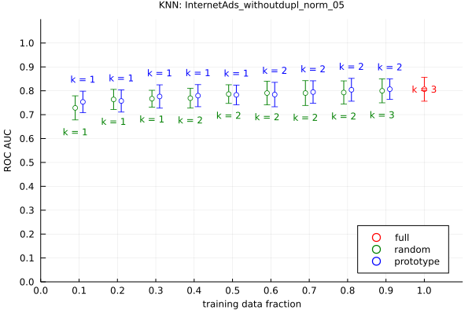
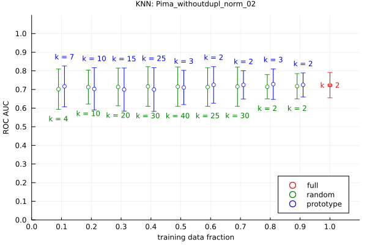
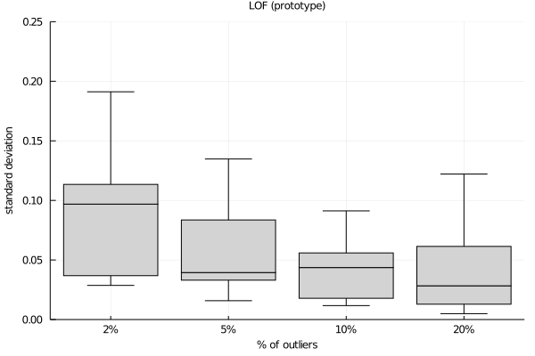

We show that using only a small fraction of the data to train distance-based outlier detection models often leads to no significant reduction in predictive performance over a wide range of datasets.
This page contains additional information not included in the published paper. If you would like to refer to our work, please cite our work as follows:
@article{Muhr2022,
doi = {TBD},
url = {TBD},
year = {2022},
publisher = {TBD},
volume = {TBD},
number = {TBD},
pages = {TBD},
author = {David Muhr and Michael Affenzeller},
title = {Little data is often enough for distance-based outlier detection},
journal = {TBD}
}The datasets used in our study stem from Campos et al.’s review on the evaluation of unsupervised outlier detection and comprise a range of tabular datasets, see DAMI datasets. Additionally, we use twelve proprietary datasets consisting of high-dimensional manufacturing sensor data. See the table below for an overview.
For each dataset, we provide a plot showing the best ROC AUC result for a specific sampling/prototype fraction with the corresponding best value of k. You can see the individual results for each dataset by clicking on the dataset links.
| Dataset | Description | N | Outliers | Dim |
|---|---|---|---|---|
| Datasets used in the literature | ||||
| ALOI | Images represented with histograms features | 50,000 | 1508 | 27 |
| Glass | A dataset describing types of glass using class 6 as outlier | 214 | 9 | 7 |
| Ionosphere | Differentiates bad radars for structures in the Ionosphere | 351 | 126 | 32 |
| KDDCup99 | Data describing network intrusions or attacks | 60,632 | 246 | 41 |
| PenDigits | Hand-written digits with class 4 downsampled as outliers | 9,868 | 20 | 16 |
| Shuttle | Space shuttle data using class 2 as outliers | 1,013 | 13 | 9 |
| Waveform | Three classes of waves and with class 0 downsampled as outliers | 3,443 | 100 | 21 |
| WBC | Benign or malignant cancer types with malignant as outliers | 454 | 10 | 9 |
| WDBC | Nuclear characteristics for breast cancer with malignant outliers | 367 | 10 | 30 |
| Semantically meaningful datasets | ||||
| Annthyroid | Hypothyroidism data with classes other than normal as outliers | 7,200 | 534 | 21 |
| Arrhythmia | Cardiac arrhythmia patient records with arrhythmia as outliers | 450 | 206 | 259 |
| Cardiotocography | Data set related to heart diseases with other than normal as outliers | 2,126 | 471 | 21 |
| HeartDisease | Medical data on heart problems with affected patients are outliers | 270 | 120 | 13 |
| InternetAds | Web images classified as ads or not with ads being outliers | 3,264 | 454 | 1,555 |
| PageBlocks | Different types of blocks in document pages with non-text as outliers | 5,473 | 560 | 10 |
| Pima | Patients suffering from diabetes are considered outliers | 768 | 268 | 8 |
| SpamBase | Data set representing emails classified as normal or spam (outliers) | 4,601 | 1,813 | 57 |
| Stamps | Differentiate geniune (ink) stamps from forged stamps (outliers) | 340 | 31 | 9 |
| Wilt | Differentiates diseased trees (outliers) from other land covers | 4,839 | 261 | 5 |
| Proprietary datasets | ||||
| Sensor1a | Detect different defects (outliers) using sensor point 1 on machine ‘a’ | 1,000 | 30 | 3001 |
| Sensor1b | Detect different defects (outliers) using sensor point 1 on machine ‘b’ | 1,000 | 30 | 3001 |
| Sensor1c | Detect different defects (outliers) using sensor point 1 on machine ‘c’ | 1,000 | 30 | 3001 |
| Sensor2a | Detect different defects (outliers) using sensor point 2 on machine ‘a’ | 1,000 | 30 | 3001 |
| Sensor2b | Detect different defects (outliers) using sensor point 2 on machine ‘b’ | 1,000 | 30 | 3001 |
| Sensor2c | Detect different defects (outliers) using sensor point 2 on machine ‘c’ | 1,000 | 30 | 3001 |
| Sensor3a | Detect different defects (outliers) using sensor point 3 on machine ‘a’ | 1,000 | 30 | 1440 |
| Sensor3b | Detect different defects (outliers) using sensor point 3 on machine ‘b’ | 1,000 | 30 | 1440 |
| Sensor3c | Detect different defects (outliers) using sensor point 3 on machine ‘c’ | 1,000 | 30 | 1440 |
| Sensor4a | Detect different defects (outliers) using sensor point 4 on machine ‘a’ | 1,000 | 30 | 1440 |
| Sensor4b | Detect different defects (outliers) using sensor point 4 on machine ‘b’ | 1,000 | 30 | 1440 |
| Sensor4c | Detect different defects (outliers) using sensor point 4 on machine ‘c’ | 1,000 | 30 | 1440 |
In addition to the individual dataset results, we provide plots depicting the score variances in relation to the outlier fractions of the dataset on the bottom of the page.
In case there are any questions, please contact the author at firstname.lastname@bmw.com.


 


 


